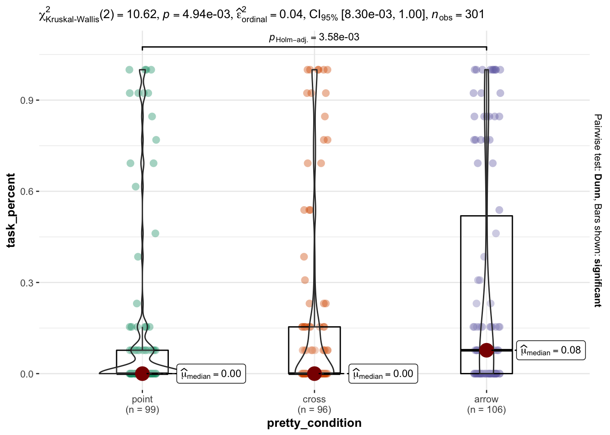
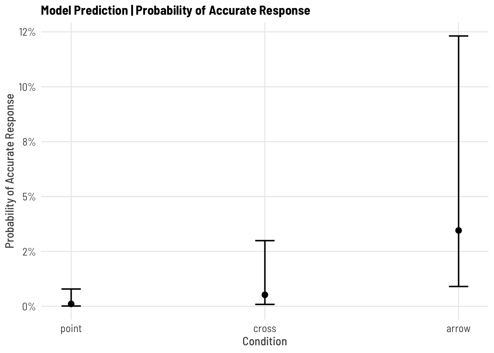
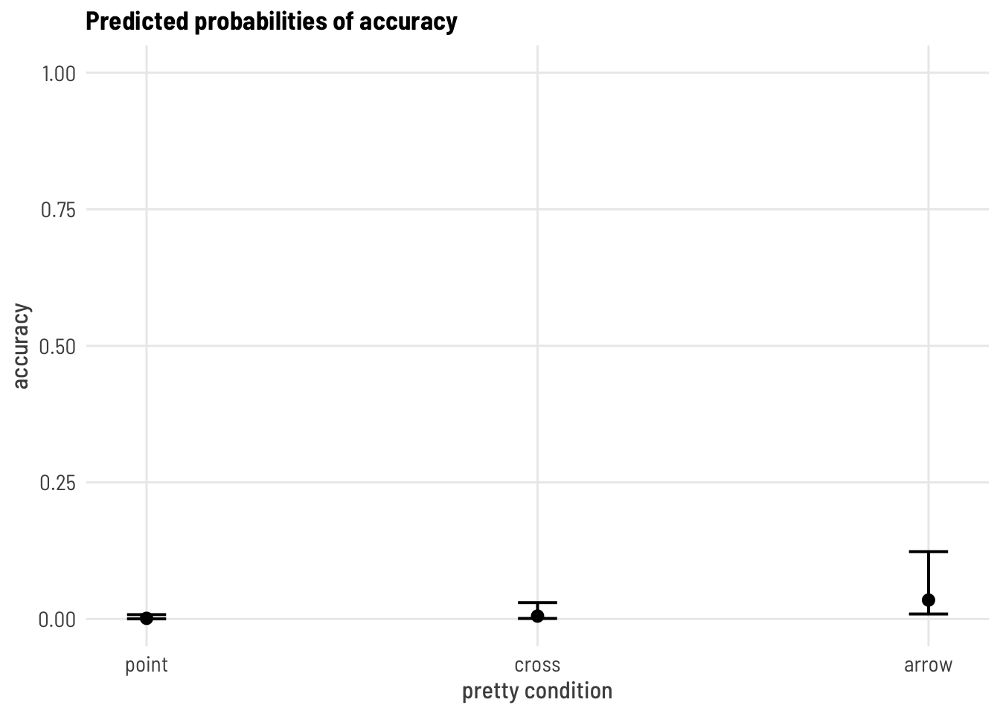
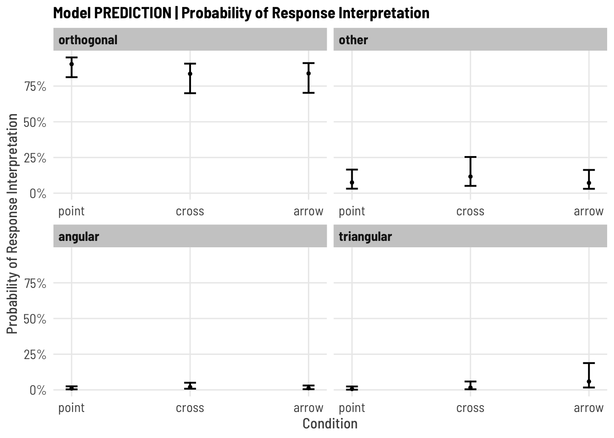
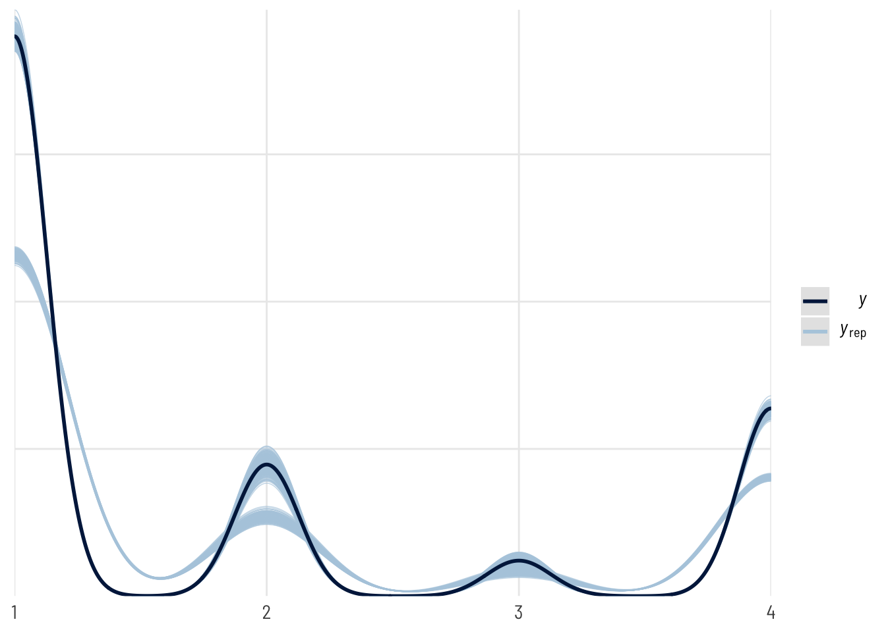
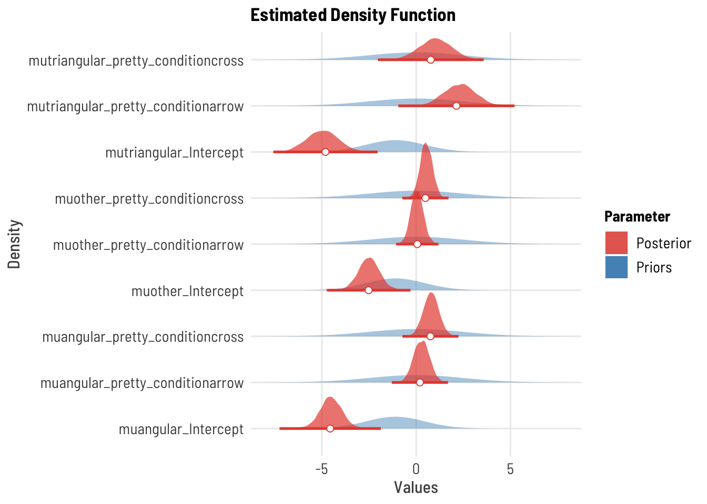
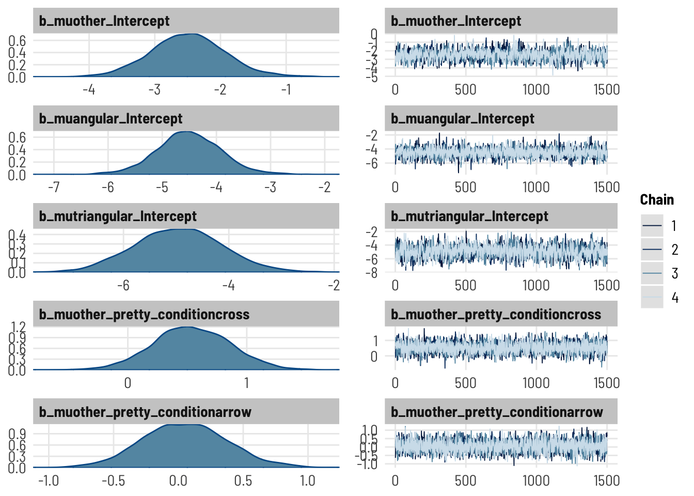
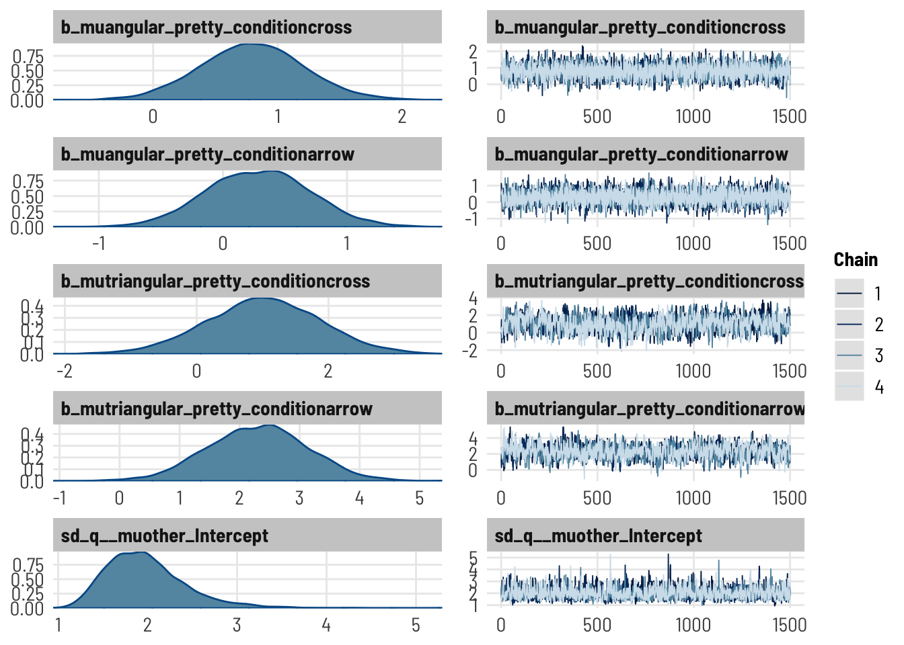
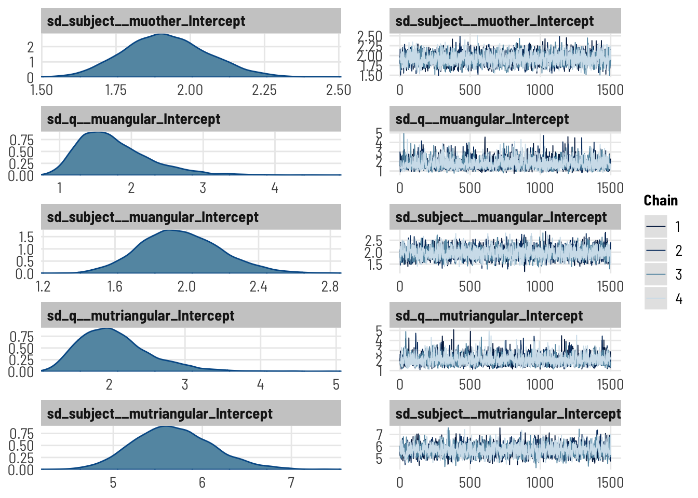

title ="Participants by Condition and Data Collection Period"cols =c("point","cross","arrow","Total for Period")cont <-table(df_subjects$term, df_subjects$condition)cont %>%addmargins() %>%kbl(caption = title, col.names = cols) %>%kable_classic()
Participants by Condition and Data Collection Period
point
cross
arrow
Total for Period
winter22
99
106
96
301
Sum
99
106
96
301
Participants
CODE
#Describe participantssubject.stats <-df_subjects %>% dplyr::select(age) %>%unlist() %>%favstats()subject.stats$percent.male <- ((df_subjects %>%filter(gender=="Male") %>%count())/count(df_subjects))$nsubject.stats$percent.female <- ((df_subjects %>%filter(gender=="Female") %>%count())/count(df_subjects))$nsubject.stats$percent.other <- ((df_subjects %>%filter(gender %nin%c("Female","Male")) %>%count())/count(df_subjects))$ntitle ="Descriptive Statistics of Participant Age and Gender"subject.stats %>%kbl (caption = title) %>%kable_classic()%>%footnote(general ="Age in Years", general_title ="Note: ",footnote_as_chunk = T)
Descriptive Statistics of Participant Age and Gender
min
Q1
median
Q3
max
mean
sd
n
missing
percent.male
percent.female
percent.other
12
19
20
21
30
20.3
1.74
301
0
0.355
0.628
0.017
Note: Age in Years
Reported
Overall 301 participants (36 % male, 63 % female, 2 % other) undergraduate STEM majors at a public American University participated in exchange for course credit (age: 12 - 30 years).
title ="Descriptive Statistics of Response Accuracy (Total % Correct)"tbl1 <- mosaic::favstats(~task_percent, data = df_s) tbl1 %>%kbl (caption = title) %>%kable_classic()
Descriptive Statistics of Response Accuracy (Total % Correct)
min
Q1
median
Q3
max
mean
sd
n
missing
0
0
0
0.154
1
0.205
0.333
301
0
CODE
title ="Descriptive Statistics of Response Accuracy (Total % Correct) BY CONDITION"tbl2 <- mosaic::favstats(task_percent ~ pretty_condition, data = df_s) tbl2 %>%kbl (caption = title) %>%kable_classic()
Descriptive Statistics of Response Accuracy (Total % Correct) BY CONDITION
pretty_condition
min
Q1
median
Q3
max
mean
sd
n
missing
point
0
0
0.000
0.077
1
0.148
0.295
99
0
cross
0
0
0.000
0.154
1
0.190
0.317
96
0
arrow
0
0
0.077
0.519
1
0.273
0.368
106
0
REPORTED
Across all conditions, overall accuracy on the task ranges from 0 to 100 with a mean of 20.547.
To explore the effect of on TM graph reading performance, we start by describing the distribution of . Across all conditions, ranged from 0 to 100 with a mean of 21%. In Figure \(\ref{fig_4B_MARKS_totalscore}\) we see that participant level accuracy on the interval graph comprehension task is low (less than 50%) consistent with prior studies, but that the average score (and variance in the distribution) are slightly higher for the and conditions.
TESTS
Aligned Ranks Transformation
CODE
m.art =art(task_percent ~ pretty_condition, data = df_s)anova(m.art)
Analysis of Variance of Aligned Rank Transformed Data
Table Type: Anova Table (Type III tests)
Model: No Repeated Measures (lm)
Response: art(task_percent)
Df Df.res F value Pr(>F)
1 pretty_condition 2 298 5.4686 0.005 **
---
Signif. codes: 0 '***' 0.001 '**' 0.01 '*' 0.05 '.' 0.1 ' ' 1
#:::::::: STATSPLOT | VIOLINggbetweenstats(y = task_percent, x = pretty_condition, data = df_s, type ="nonparametric")

MIXED LOGISTIC REGRESSION
Fit a mixed logistic regression (at the item level), predicting accuracy (absolute score) on all discriminating questions by condition; accounting for random effects of subject and item.
#confirm all factors is.factor(df_i$q) &&is.factor(df_i$subject) &&is.factor(df_i$pretty_condition) &&is.factor(df_i$accuracy)
[1] TRUE
CODE
## 1 | SETUP RANDOM INTERCEPT SUBJECT#:: EMPTY MODEL (baseline, no random effect)print("Empty fixed model")
[1] "Empty fixed model"
CODE
m0 =glm(accuracy ~1, family ="binomial", data = df_i) # summary(m0)#:: RANDOM INTERCEPT SUBJECT + ITEMprint("Subject Intercept + Item intercept random model")
[1] "Subject Intercept + Item intercept random model"
CODE
mm.rSQ <-glmer(accuracy ~ (1|subject) + (1|q), data = df_i, family ="binomial",control =glmerControl(optimizer="bobyqa", optCtrl=list(maxfun=2e5)))#summary(mm.rSQ)## 2 | ADD FIXED EFFECT CONDITIONprint("FIXED Condition + Subject & Item random intercepts")
[1] "FIXED Condition + Subject & Item random intercepts"
CODE
mm.CrSQ <-glmer(accuracy ~ pretty_condition + (1|subject) + (1|q) ,data = df_i, family = binomial,control =glmerControl(optimizer="bobyqa", optCtrl=list(maxfun=2e5)))# summary(mm.CrSQ)# car::Anova(mm.CrSQ)test_lrt(mm.rSQ,mm.CrSQ) #same as anova(m0, m1, test = "Chi")
# Likelihood-Ratio-Test (LRT) for Model Comparison (ML-estimator)
Name | Model | df | df_diff | Chi2 | p
--------------------------------------------------
mm.rSQ | glmerMod | 3 | | |
mm.CrSQ | glmerMod | 5 | 2 | 15.09 | < .001
CODE
paste("Likelihood Ratio test is significant? p = ",(test_lrt(mm.rSQ,mm.CrSQ))$p[2])
[1] "Likelihood Ratio test is significant? p = 0.000527719053438071"
Reported
To explore the effect of marks on accuracy, we fit a mixed effects logistic regression model with random intercepts for subjects and questions, with mark design as a fixed effect. A likelihood ratio test indicates that a model including this main effect is a significantly better fit for the data than an intercepts-only baseline model (\(\chi^2 (3,5) = 15.09, p < 0.001\)).
Describe
CODE
# best modelm <- mm.CrSQm %>%write_rds(file ="analysis/SGC4B/models/sgc4b_glmer_acc_mm.CrSQ.rds")#::::::::: PRINT MODEL print("PREDICTOR MODEL")
[1] "PREDICTOR MODEL"
CODE
summary(m)
Generalized linear mixed model fit by maximum likelihood (Laplace
Approximation) [glmerMod]
Family: binomial ( logit )
Formula: accuracy ~ pretty_condition + (1 | subject) + (1 | q)
Data: df_i
Control: glmerControl(optimizer = "bobyqa", optCtrl = list(maxfun = 200000))
AIC BIC logLik deviance df.resid
1857 1888 -923 1847 3908
Scaled residuals:
Min 1Q Median 3Q Max
-9.717 -0.149 -0.044 -0.017 5.949
Random effects:
Groups Name Variance Std.Dev.
subject (Intercept) 25.71 5.07
q (Intercept) 1.22 1.10
Number of obs: 3913, groups: subject, 301; q, 13
Fixed effects:
Estimate Std. Error z value Pr(>|z|)
(Intercept) -6.794 1.000 -6.79 1.1e-11 ***
pretty_conditioncross 1.549 0.953 1.63 0.1039
pretty_conditionarrow 3.464 0.978 3.54 0.0004 ***
---
Signif. codes: 0 '***' 0.001 '**' 0.01 '*' 0.05 '.' 0.1 ' ' 1
Correlation of Fixed Effects:
(Intr) prtty_cndtnc
prtty_cndtnc -0.575
prtty_cndtnr -0.752 0.537
#:::::::: MANUAL ONE-SIDED SIGTEST #note: anova and chi square are always one-tailed, but that is independent of being one-sided#https://www.ibm.com/support/pages/can-one-get-one-tailed-tests-logistic-regression-dividing-significance-levels-half# one-sided (right tail) z test for B COEFFICIENT#SANITY CHECK 2-tailed test should match the model output# tt <- 2*pnorm(summary(m)$coefficients[2,3], lower.tail = F)# paste("p value for two-tailed test, null B = 0 : ",round(tt,5))# ot <- pnorm(summary(m)$coefficients[2,3], lower.tail = F)# paste("BUT we want a one directional, null: B <= 0: ",round(ot,5))#:::::::: INTERPRET COEFFICIENTSpaste("LOG ODDS")
# A tibble: 5 × 9
effect group term estimate std.error statistic p.value conf.low conf.high
<chr> <chr> <chr> <dbl> <dbl> <dbl> <dbl> <dbl> <dbl>
1 fixed <NA> (Int… 0.00112 0.00112 -6.79 1.11e-11 1.58e-4 0.00796
2 fixed <NA> pret… 4.71 4.49 1.63 1.04e- 1 7.28e-1 30.5
3 fixed <NA> pret… 31.9 31.3 3.54 3.98e- 4 4.70e+0 217.
4 ran_pars subj… sd__… 5.07 NA NA NA NA NA
5 ran_pars q sd__… 1.10 NA NA NA NA NA
CODE
paste("PROBABILITIES")
[1] "PROBABILITIES"
CODE
#probability control = plogis(intercept)#probability impasse = plogis(intercept + coefficient)#FROM predict()# newdata <- df_i %>% dplyr::select(pretty_condition, subject, q)# preds <- predict(m, newdata = newdata, type = "response")# preds <- cbind(newdata, preds)# p <- preds %>% # dplyr::select(pretty_condition, preds) %>% # group_by(pretty_condition) %>% # summarise(# median = median(preds),# se = sd(preds)/sqrt(n()),# lwr = median - 1.96*se,# upr = median + 1.96*se)#FROM merTools#setup df newdata <- df_i %>% dplyr::select(pretty_condition, subject, q)#make predictionspreds <-predictInterval(m, newdata = newdata,which ="fixed", #full, fixed or random for those onlytype ="probability", #linear.predictionstat ="median",n.sims =1000,level =0.80) #width of prediction interval
Warning: executing %dopar% sequentially: no parallel backend registered
CODE
#join predictions to the new dataframepreds <-cbind(newdata, preds)#summarize(summ_preds <- preds %>% dplyr::select(pretty_condition, fit, lwr, upr) %>%group_by(pretty_condition) %>%summarise(median =median(fit),lower =median(lwr),upper =median(upr) ))
# A tibble: 3 × 4
pretty_condition median lower upper
<fct> <dbl> <dbl> <dbl>
1 point 0.00116 0.000185 0.00696
2 cross 0.00503 0.000895 0.0277
3 arrow 0.0359 0.00770 0.150
Inference
Reported
A Wald Chi-Square tests confirms a main effect of mark design (\(\chi^2 (2) = 12.7, p < 0.001\)).
Model coefficients indicate that relative to the point mark condition, the arrow mark increases the odds of a correct response (\(e^{b_{1[arrow]}} = 31.95, SE = 3.54, p < 0.001\)).
Model coefficients indicate that relative to the point mark condition, the cross mark did not change the odds of a correct response (\(e^{b_{1[cross]}} = 4.71, SE = 4.48, p = 0.10\)). Model predictions are visualized in Figure \(\ref{fig_4B_accuracy}\) [B], while parameter estimates and model specification is detailed in Appendix \(\ref{SGC4B_MARKS_MODEL_accuracy}\).
Visualize
CODE
## | PLOT PARAMETERS #SJPLOT | MODEL | ODDS RATIOplot_model(m, vline.color ="red", show.intercept =TRUE, show.values =TRUE,p.threshold =0.1, #manually adjust to account for directional testci.lvl =0.95 ) +#manually adjusted for directional test labs(title ="Model Estimate | Odds Ratio",subtitle ="",x ="Condition") #why no error bars? problem with model?
## | PLOT PREDICTIONS#SJPLOT | MODEL | PROBABILITIESplot_model(m, type="eff",show.intercept =TRUE,show.values =TRUE,title ="Model Prediction | Probability of Accurate Response",axis.title =c("Condition","Probability of Accurate Response"))
$pretty_condition

CODE
#PLOT MODEL PREDICTIONplot_model(m, type ="pred")[[1]] +ylim(0,1)
Scale for 'y' is already present. Adding another scale for 'y', which will
replace the existing scale.

CODE
# labs(# title = "Model Prediction | Probability of Accurate Response",# subtitle = "Impasse increases Probability of Correct Response"# )
For some reason there are convergence difficulties. Try again with the brms version
H1A | OVERALL INTERPRETATION STATE
“orthogonal” [reference category] includes orthogonal and satisficing responses ==> indicates a primarily orthogonal state of coordinate system understanding
“other” includes: blank, reference point, responses that can’t be classified (including selecting all datapoints), => indicates an uncertain or unidentifiable state of coordinate system understanding, but one that is distinctly not orthogonal nor triangular
“angular” includes ‘lines connecting’ responses as well as responses that include both orthogonal and triangular answers => indicates some degree of angular/triangular coordinate understanding
“triangular” includes correct triangular => indicates a correct triangular coordinate understanding
#::::::::::::DESCRIPTIVEStable(df_i$state, df_i$pretty_condition) %>%addmargins(2) %>%#display sum for rowprop.table(margin=2) %>%#return proportion (of column)addmargins(1) #sanity check sum of columns
point cross arrow Sum
orthogonal 0.6737 0.5857 0.5784 0.6121
other 0.1453 0.1763 0.1132 0.1439
angular 0.0326 0.0481 0.0363 0.0388
triangular 0.1484 0.1899 0.2721 0.2052
Sum 1.0000 1.0000 1.0000 1.0000
CODE
(t <-table(df_i$state, df_i$pretty_condition) %>%addmargins(2) %>%#display sum for rowaddmargins(1)) #sanity check sum of columns
point cross arrow Sum
orthogonal 867 731 797 2395
other 187 220 156 563
angular 42 60 50 152
triangular 191 237 375 803
Sum 1287 1248 1378 3913
MIXED MULTINOMIAL REGRESSION
Does condition affect the response state of of items across the task?
Fit Model [brms]
CODE
#BAYESIAN RANDOM ONLYBmm.cat.rSQ <-brm( state ~1+ (1|subject) + (1|q), data = df_i, family ="categorical",chains =4, iter =2500, warmup =1000,cores =4, seed =1234,save_pars =save_pars(all =TRUE),# backend = "cmdstanr",file ="analysis/SGC4B/models/sgc4b_brms_state_Bmm.cat.rSQ_LAB.rds")#set priors [see justification, in SGC3A]inf_priors <-c(#prior on INTERCEPTS#25% chance of each answer in control, scale = from 0.01 to 62%prior(normal(-1.1, 1.5), class ="Intercept", dpar ="muangular"),prior(normal(-1.1, 1.5), class ="Intercept", dpar ="muother"),prior(normal(-1.1, 1.5), class ="Intercept", dpar ="mutriangular"),#prior on COEFFICIENT#likely to change odds between 0 and 2.4prior(normal(0, 2.42), class = b, coef="pretty_conditioncross", dpar ="muangular"),prior(normal(0, 2.42), class = b, coef="pretty_conditioncross", dpar ="muother"),prior(normal(0, 2.42), class = b, coef="pretty_conditioncross", dpar ="mutriangular"),prior(normal(0, 2.42), class = b, coef="pretty_conditionarrow", dpar ="muangular"),prior(normal(0, 2.42), class = b, coef="pretty_conditionarrow", dpar ="muother"),prior(normal(0, 2.42), class = b, coef="pretty_conditionarrow", dpar ="mutriangular"))# # # # # #UNINFORMATIVE PRIOR BAYESIAN MIXED VERSION# flat_Bmm.cat.CrSQ <- brm( state ~ pretty_condition + (1|subject) + (1|q),# data = df_i,# family = "categorical",# chains = 4, iter = 2000, warmup = 1000,# cores = 4, seed = 1234,# save_pars = save_pars(all = TRUE),# backend = "cmdstanr",# file ="analysis/SGC4B/models/sgc4b_brms_state_FLAT_Bmm.cat.CrSQ_LAB.rds")# # # # # # # determine default priors # prior_summary(flat_Bmm.cat.CrSQ)#INFORMATIVE PRIORSBmm.cat.CrSQ <-brm( state ~ pretty_condition + (1|subject) + (1|q), data = df_i, family ="categorical",prior = inf_priors,chains =4, iter =2500, warmup =1000,cores =4, seed =1234,save_pars =save_pars(all =TRUE),control =list(adapt_delta =0.98), # to deal with divergent transitions# backend = "cmdstanr",file ="analysis/SGC4B/models/sgc4b_brms_state_Bmm.cat.CrSQ_LAB.rds" )
Compiling Stan program...
Trying to compile a simple C file
Running /Library/Frameworks/R.framework/Resources/bin/R CMD SHLIB foo.c
clang -mmacosx-version-min=10.13 -I"/Library/Frameworks/R.framework/Resources/include" -DNDEBUG -I"/Library/Frameworks/R.framework/Versions/4.2/Resources/library/Rcpp/include/" -I"/Library/Frameworks/R.framework/Versions/4.2/Resources/library/RcppEigen/include/" -I"/Library/Frameworks/R.framework/Versions/4.2/Resources/library/RcppEigen/include/unsupported" -I"/Library/Frameworks/R.framework/Versions/4.2/Resources/library/BH/include" -I"/Library/Frameworks/R.framework/Versions/4.2/Resources/library/StanHeaders/include/src/" -I"/Library/Frameworks/R.framework/Versions/4.2/Resources/library/StanHeaders/include/" -I"/Library/Frameworks/R.framework/Versions/4.2/Resources/library/RcppParallel/include/" -I"/Library/Frameworks/R.framework/Versions/4.2/Resources/library/rstan/include" -DEIGEN_NO_DEBUG -DBOOST_DISABLE_ASSERTS -DBOOST_PENDING_INTEGER_LOG2_HPP -DSTAN_THREADS -DBOOST_NO_AUTO_PTR -include '/Library/Frameworks/R.framework/Versions/4.2/Resources/library/StanHeaders/include/stan/math/prim/mat/fun/Eigen.hpp' -D_REENTRANT -DRCPP_PARALLEL_USE_TBB=1 -I/usr/local/include -fPIC -Wall -g -O2 -c foo.c -o foo.o
In file included from <built-in>:1:
In file included from /Library/Frameworks/R.framework/Versions/4.2/Resources/library/StanHeaders/include/stan/math/prim/mat/fun/Eigen.hpp:13:
In file included from /Library/Frameworks/R.framework/Versions/4.2/Resources/library/RcppEigen/include/Eigen/Dense:1:
In file included from /Library/Frameworks/R.framework/Versions/4.2/Resources/library/RcppEigen/include/Eigen/Core:88:
/Library/Frameworks/R.framework/Versions/4.2/Resources/library/RcppEigen/include/Eigen/src/Core/util/Macros.h:628:1: error: unknown type name 'namespace'
namespace Eigen {
^
/Library/Frameworks/R.framework/Versions/4.2/Resources/library/RcppEigen/include/Eigen/src/Core/util/Macros.h:628:16: error: expected ';' after top level declarator
namespace Eigen {
^
;
In file included from <built-in>:1:
In file included from /Library/Frameworks/R.framework/Versions/4.2/Resources/library/StanHeaders/include/stan/math/prim/mat/fun/Eigen.hpp:13:
In file included from /Library/Frameworks/R.framework/Versions/4.2/Resources/library/RcppEigen/include/Eigen/Dense:1:
/Library/Frameworks/R.framework/Versions/4.2/Resources/library/RcppEigen/include/Eigen/Core:96:10: fatal error: 'complex' file not found
#include <complex>
^~~~~~~~~
3 errors generated.
make: *** [foo.o] Error 1
Start sampling
Describe
CODE
# best model# m <- Bmm.cat.CrSQm <- Bmm.cat.CrSQ#::::::::: PRINT MODEL print("PREDICTOR MODEL")
[1] "PREDICTOR MODEL"
CODE
summary(m)
Family: categorical
Links: muother = logit; muangular = logit; mutriangular = logit
Formula: state ~ pretty_condition + (1 | subject) + (1 | q)
Data: df_i (Number of observations: 3913)
Draws: 4 chains, each with iter = 2500; warmup = 1000; thin = 1;
total post-warmup draws = 6000
Group-Level Effects:
~q (Number of levels: 13)
Estimate Est.Error l-95% CI u-95% CI Rhat Bulk_ESS
sd(muother_Intercept) 1.98 0.45 1.29 3.07 1.00 1603
sd(muangular_Intercept) 1.77 0.52 1.04 3.01 1.00 2347
sd(mutriangular_Intercept) 2.08 0.49 1.35 3.22 1.00 1964
Tail_ESS
sd(muother_Intercept) 3313
sd(muangular_Intercept) 3232
sd(mutriangular_Intercept) 3571
~subject (Number of levels: 301)
Estimate Est.Error l-95% CI u-95% CI Rhat Bulk_ESS
sd(muother_Intercept) 1.92 0.14 1.66 2.21 1.00 2305
sd(muangular_Intercept) 1.97 0.23 1.55 2.44 1.00 2199
sd(mutriangular_Intercept) 5.68 0.45 4.87 6.62 1.00 1653
Tail_ESS
sd(muother_Intercept) 3880
sd(muangular_Intercept) 3625
sd(mutriangular_Intercept) 2782
Population-Level Effects:
Estimate Est.Error l-95% CI u-95% CI Rhat
muother_Intercept -2.49 0.57 -3.58 -1.32 1.00
muangular_Intercept -4.51 0.61 -5.70 -3.28 1.00
mutriangular_Intercept -4.96 0.84 -6.56 -3.29 1.00
muother_pretty_conditioncross 0.54 0.33 -0.10 1.18 1.00
muother_pretty_conditionarrow 0.05 0.33 -0.58 0.73 1.00
muangular_pretty_conditioncross 0.80 0.41 -0.01 1.61 1.00
muangular_pretty_conditionarrow 0.29 0.42 -0.53 1.13 1.00
mutriangular_pretty_conditioncross 1.01 0.87 -0.70 2.71 1.00
mutriangular_pretty_conditionarrow 2.30 0.84 0.67 3.93 1.01
Bulk_ESS Tail_ESS
muother_Intercept 1128 2007
muangular_Intercept 1969 3004
mutriangular_Intercept 1437 2552
muother_pretty_conditioncross 2073 3568
muother_pretty_conditionarrow 2426 3772
muangular_pretty_conditioncross 3347 4396
muangular_pretty_conditionarrow 3367 4117
mutriangular_pretty_conditioncross 788 1379
mutriangular_pretty_conditionarrow 882 2048
Draws were sampled using sampling(NUTS). For each parameter, Bulk_ESS
and Tail_ESS are effective sample size measures, and Rhat is the potential
scale reduction factor on split chains (at convergence, Rhat = 1).
#think of this like the anova(model) to get p values for each predictor#has to recompile the models with rstan. total drag(b <-bayesfactor(Bmm.cat.rSQ, m))
Warning: Bayes factors might not be precise.
For precise Bayes factors, sampling at least 40,000 posterior samples is recommended.
Computation of Bayes factors: estimating marginal likelihood, please wait...
Warning: logml could not be estimated within maxiter, rerunning with adjusted starting value.
Estimate might be more variable than usual.
Warning: logml could not be estimated within maxiter, rerunning with adjusted starting value.
Estimate might be more variable than usual.
Bayes Factors for Model Comparison
Model BF
[2] pretty_condition + (1 | subject) + (1 | q) 7.98e-26
* Against Denominator: [1] 1 + (1 | subject) + (1 | q)
* Bayes Factor Type: marginal likelihoods (bridgesampling)
CODE
print("DESCRIBE POSTERIOR")
[1] "DESCRIBE POSTERIOR"
CODE
#:::::::: INTERPRET COEFFICIENTS# se <- sqrt(diag(stats::vcov(m)))# # table of estimates with 95% CI# (tab <- cbind(Est = fixef(m),# LL = fixef(m) - 1.96 * se,# UL = fixef(m) + 1.96 * se))paste("LOG ODDS")
##DRAWS METHOD# GENERATE draws from model# draws <- df_i %>%# data_grid(pretty_condition, subject, q) %>% # add_fitted_draws(Bmm.cat.CrSQ,# # n = 100,# # dpar = TRUE,# # transform = TRUE, #gives prob%, otherwise OR# re_formula = NA)# # draws %>% write_rds(file = "analysis/SGC3A/models/draws/draws_BB.catCrSQ.rds")# # #OR load from file# # draws <- read_rds(file = "analysis/SGC3A/models/draws/draws_BB.catCrSQ.rds")# # # SUMMARIZE draws from model# (k <- kable(draws %>%# dplyr::select(pretty_condition, .category, .value) %>%# group_by(pretty_condition, .category) %>%# median_hdci(.value), digits = 4, col.names =# c("Condition","Category", "Probability","Lower Cred.I","Upper Cred.I", "CI Width", "Point Type", "Interval Type")) %>%# kable_styling())##EASY STATS INSIGHT # https://easystats.github.io/insight/reference/get_predicted.html# p <- get_predicted(m, predict = "expectation")
TODO INFERENCE
UPDATE THIS [template from 3A
[REPORT POSTERIOR MEDIAN \(\exp_{beta}\), 95 % credible interval, % probability of direction]
We fit a (bayesian) multinomial logistic regression model with random intercepts for subjects and questions. A Bayes Factor model comparison (against a random intercepts-only model) indicates extreme evidence for a main effect of CONDITION (BF = 1.38e+14).
Consistent with our hypothesis, the impasse condition substantially increases the odds of transitional interpretations.
Across the entire task participants in the impasse condition were 12 times more likely to offer an ‘unknown’ rather than orthogonal response compared with those in the control condition ( \(e^{\beta_1} = 12.13, 95 \% CI [6.29, 25.24], pd = 100\%\)). Participants in the impasse condition were 12 times more likely to offer an ‘angular’ rather than orthogonal response compared with those in the control condition ( \(e^{\beta_1} = 11.48, 95 \% CI [3.95, 37.67], pd = 100\%\)), and 34 times more likely to offer an ‘triangular’ rather than orthogonal response compared with those in the control condition ( \(e^{\beta_1} = 33.90, 95 \% CI [6.22, 211.18], pd = 100\%\)).
## | PLOT PREDICTIONS#SJPLOT | MODEL | PROBABILITIES# plot_model(m, type="eff",# show.intercept = TRUE,# show.values = TRUE,# title = "Model Prediction | Probability of Accurate Response",# axis.title = c("Condition","Probability of Accurate Response"))# #PLOT MODEL PREDICTIONplot_model(m, type ="pred",title ="Model PREDICTION | Probability of Response Interpretation",axis.title =c("Condition", "Probability of Response Interpretation"))
Note: uncertainty of error terms are not taken into account. You may want to use `rstantools::posterior_predict()`.
$pretty_condition

CODE
#TODO OUTPUT TABLE # modelsummary(m)
COMPARE
CODE
# compare_models(m.mbl1, mm.cat.CrSQ)
Diagnostics
CODE
#CHECK Fit of posterior predictive to datapp_check(Bmm.cat.CrSQ, ndraws=1000)

CODE
#CHECK posterior vs. priorsresult <-estimate_density(Bmm.cat.CrSQ)plot(result, stack =FALSE, priors=TRUE)

CODE
#CHECK modelplot(Bmm.cat.CrSQ)



Source Code
---subtitle: 'Study SGC4B | Hypothesis Testing'# YAML FOR generating modelsummary tables# uncomment to run those cells only # \usepackage{booktabs}# \usepackage{siunitx}# \newcolumntype{d}{S[input-symbols = ()]}---\newpage# Hypothesis Testing {#sec-SGC4B-hypotesting}*The purpose of this notebook is test the hypotheses that determined the designs of the SGC4B study.*```{r}#| label: SETUP#| warning : false#| message : false#UTILITIESlibrary(Hmisc) # %nin% operatorlibrary(broom) #tidy model outputlibrary(broom.mixed) #tidy model outputlibrary(mosaic) #favstats# library(modelr)library(distributional)# library(jtools)# library(pwr) #power analysis#VISUALIZATIONlibrary(scales)# library(ggpubr) #arrange plots# library(cowplot) #arrange shift function plotslibrary(ggformula) #easy graphs# # library(vcd) #mosaic plots# # library(vcdExtra) #mosaic plotslibrary(kableExtra) #printing tableslibrary(sjPlot) #visualize model coefficientslibrary(ggdist) #uncertainty vizlibrary(gghalves) # plots. in halflibrary(ggbeeswarm) # violin plot stuffslibrary(statsExpressions)library(ggstatsplot) #plots with statslibrary(modelsummary) #latex tables for models!#MODELLINGlibrary(ARTool) #nonparametric anova# library(rstatix) #helpful testing functions incl wilcoxon, etclibrary(insight)library(report) #easystats reportinglibrary(see) #easystats visualizationlibrary(performance) #easystats model diagnosticslibrary(parameters) #easystats model summary and vis# library(qqplotr) #confint on qq plot# library(gmodels) #contingency table and CHISQR# library(equatiomatic) #extract model equation# library(pscl) #zeroinfl / hurdle models library(lme4) #mixed effects modelslibrary(lmerTest) #for CIs in glmerlibrary(merTools)# library(ggeffects) #visualization log regr models#MULTINOMIAL library(nnet) #multinomial logistic regression [not mixed] #no p valueslibrary(mclogit) #frequentist mixed multinomial logistic regression [mblogit] #gives p values#BAYESIANlibrary(cmdstanr) #executing stanlibrary(brms) #bayesian mixed multinomials [+ other bayesian reg models]library(bayestestR) library(tidyverse) #ALL THE THINGS#OUTPUT OPTIONSlibrary(dplyr, warn.conflicts =FALSE)options(dplyr.summarise.inform =FALSE)options(ggplot2.summarise.inform =FALSE)options(scipen=1, digits=3)#GRAPH THEMEING# theme_set(theme_minimal()) # Custom ggplot theme to make pretty plots# Get the font at https://fonts.google.com/specimen/Barlow+Semi+Condensedtheme_clean <-function() {theme_minimal(base_family ="Barlow Semi Condensed") +theme(panel.grid.minor =element_blank(),plot.title =element_text(family ="BarlowSemiCondensed-Bold"),axis.title =element_text(family ="BarlowSemiCondensed-Medium"),strip.text =element_text(family ="BarlowSemiCondensed-Bold",size =rel(1), hjust =0),strip.background =element_rect(fill ="grey80", color =NA))}set_theme(base =theme_clean())##IMPORT CUSTOM COLOR PALETTESsource("analysis/utils/foxy_palettes.R")set.seed(1234)``````{r}#| label: IMPORT-DATA#| warning : false#| message : false# HACK WD FOR LOCAL RUNNING?# imac = "/Users/amyraefox/Code/SGC-Scaffolding_Graph_Comprehension/SGC-X/ANALYSIS/MAIN"# mbp = "/Users/amyfox/Sites/RESEARCH/SGC—Scaffolding Graph Comprehension/SGC-X/ANALYSIS/MAIN"# setwd(mbp)#IMPORT DATA df_subjects <-read_rds('analysis/SGC4B/data/2-scored-data/sgc4b_scored_participants.rds')%>%mutate(task_percent = DV_percent_NABS )df_items <-read_rds('analysis/SGC4B/data/2-scored-data/sgc4b_scored_items.rds') %>%mutate (q =as.factor(q), subject =as.factor(subject),accuracy =recode_factor(score_niceABS, "0"="incorrect","1"="correct"),pretty_condition =fct_relevel(pretty_condition,c("point","cross","arrow")),state =recode_factor(score_SCALED, #for ordinal"-1"="orthogonal","-0.5"="other","0"="other","0.5"="angular","1"="triangular"),state =as.ordered(state))```## SAMPLE### Data Collection```{r}#| label : DESC-DATA-COLLECTIONtitle ="Participants by Condition and Data Collection Period"cols =c("point","cross","arrow","Total for Period")cont <-table(df_subjects$term, df_subjects$condition)cont %>%addmargins() %>%kbl(caption = title, col.names = cols) %>%kable_classic()```### Participants```{r}#| label: DESC-PARTICIPANTS#Describe participantssubject.stats <-df_subjects %>% dplyr::select(age) %>%unlist() %>%favstats()subject.stats$percent.male <- ((df_subjects %>%filter(gender=="Male") %>%count())/count(df_subjects))$nsubject.stats$percent.female <- ((df_subjects %>%filter(gender=="Female") %>%count())/count(df_subjects))$nsubject.stats$percent.other <- ((df_subjects %>%filter(gender %nin%c("Female","Male")) %>%count())/count(df_subjects))$ntitle ="Descriptive Statistics of Participant Age and Gender"subject.stats %>%kbl (caption = title) %>%kable_classic()%>%footnote(general ="Age in Years", general_title ="Note: ",footnote_as_chunk = T) ```**Reported****Overall** `r subject.stats$n` participants (`r round((subject.stats$percent.male),2) * 100` % male, `r round((subject.stats$percent.female),2) * 100` % female, `r round((subject.stats$percent.other),2) * 100` % other) undergraduate STEM majors at a public American University participated in exchange for course credit (age: `r (subject.stats$min)` - `r (subject.stats$max)` years).## H1 — OVERALL TASK ACCURACY#### Setup```{r}#| label: SETUP-ACCdf_s <- df_subjects %>% dplyr::select(pretty_condition, task_percent)df_i = df_items %>%filter(q %nin%c(6,9)) %>% dplyr::select(pretty_condition, accuracy, subject,q)```#### Visualize```{r}#| label: DESC-ACC#:::::::: STACKED PROPORTIONAL BAR CHARTdf_i %>%ggplot(data = .,mapping =aes(x = pretty_condition,fill = accuracy)) +geom_bar(position ="fill" ) +#,color = "black") +scale_fill_brewer(palette ="Set1") +# facet_wrap(~pretty_mode) + labs(title ="Overall Accuracy",x ="Condition",fill ="",subtitle="The full grid decreases performance")#:::::::: STACKED BAR CHART BY QUESTIONdf_items %>%ggplot(data = .,mapping =aes(x = pretty_condition,fill = accuracy)) +geom_bar(position ="fill" ) +#,color = "black") +scale_fill_brewer(palette ="Set1") +facet_wrap(~q) +labs(title ="Accuracy by Question",x ="Condition",fill ="",subtitle="Q6 and Q9 are non-discriminative")#:::::::: FACETED HISTOGRAMstats = df_s %>%group_by(pretty_condition) %>% dplyr::summarise(mean =mean(task_percent))gf_props(~task_percent,fill =~pretty_condition, data = df_s) %>%# gf_facet_grid(pretty_condition ~ pretty_mode) %>%gf_facet_grid(~pretty_condition) %>%gf_vline(data = stats, xintercept =~mean, color ="red") +labs(x ="% Correct",y ="proportion of subjects",title ="Overall Absolute Score (% Correct)",subtitle ="") +theme(legend.position ="blank")```#### Present```{r}#:::::::: RAINCLOUD WITH STATSdf <- df_s %>%mutate(task_percent = task_percent*100,condition =fct_rev(pretty_condition))p <-ggbetweenstats(data = df, x = condition, y = task_percent,plot.type ="box", # centrality.type = "parametric",results.subtitle =FALSE,subtitle =NULL,# package = "RColorBrewer",# palette = "PRGn",centrality.point.args =list(color="black", size =3, shape =1),point.args =list(alpha=0), #suppress pointsggplot.component =## modify further with `{ggplot2}` functionslist(# aes(color = pretty_condition, fill = pretty_condition),# scale_colour_manual(values = paletteer::paletteer_c("viridis::viridis", 3)),# scale_fill_manual(values = paletteer::paletteer_c("viridis::viridis", 3)),theme(axis.text.x =element_text(angle =90))) ) +# ggdist::stat_halfeye(# alpha = 0.7, # point_colour = NA,# adjust = .5, # width = .5, .width = 0, # justification = -.5) +geom_boxplot(alpha =0.1,width = .2, outlier.shape =NA ) +geom_point(size =2,alpha = .5,position =position_jitter(seed =1, width = .08, height =1.5 ) ) +coord_flip() +theme_clean() +theme(legend.position ="blank")p$layers[[3]]=NULL#remove default boxplot# e <- statsExpressions::two_sample_test(y = task_percent, x = pretty_condition, data = df,# type = "nonparametric", alternative = "less",# var.equal = FALSE)#labels are layer 4p <- p +labs(title ="STUDY 4B | Distribution of Total Score",y ="Percentage of correct responses across task", x ="",subtitle ="Impasse condition yields greater variance and more high scores")p# ggsave(p, filename = "figures/SGC4B_MARKS_totalscore.png", width = 6, height =4)# ggsave(p, filename = "figures/SGC3A_LAB_totalscore.svg", width = 6, height =4)``````{r}#:::::::: LABELLED # temp <- df_i %>% mutate(# accuracy = fct_rev(accuracy)# ) # # p <- # ggbarstats(data = temp, x = accuracy, y = pretty_condition,# results.subtitle = FALSE,# ggplot.component = ## modify further with `{ggplot2}` functions# list(# scale_fill_foxy(discrete = TRUE, "accuracy")# # scale_fill_manual(values = paletteer::paletteer_d("lisa::FridaKahlo", 2))# # scale_fill_manual(values = paletteer::paletteer_d("lisa::FridaKahlo", 2))# # theme(axis.text.x = element_text(angle = 90)))# )) + theme_clean() + theme(legend.position = "bottom")# # p <- p + labs(title = "DISTRIBUTION | Question Accuracy",# y = "Proportion of Questions", x = "Condition",# subtitle = "")# # p p <- df_i %>%ggplot(data = .,mapping =aes(x = pretty_condition,fill = accuracy)) +geom_bar(position ="fill", width =0.5 ) +#,color = "black") +scale_fill_foxy(discrete =TRUE, "accuracy") +# scale_fill_manual(values = paletteer::paletteer_d("lisa::FridaKahlo", 2))+# facet_wrap(~pretty_mode) + # coord_flip() +theme(legend.position="bottom")+labs(title ="DISTRIBUTION | Question Accuracy",x ="Condition",y ="Proportion of Questions",fill ="",subtitle="")p# ggsave(p, filename = "figures/SGC4B_MARKS_accuracy.png", width = 6, height =4)```#### Describe```{r}#| label: DESC2-ACCtitle ="Descriptive Statistics of Response Accuracy (Total % Correct)"tbl1 <- mosaic::favstats(~task_percent, data = df_s) tbl1 %>%kbl (caption = title) %>%kable_classic()title ="Descriptive Statistics of Response Accuracy (Total % Correct) BY CONDITION"tbl2 <- mosaic::favstats(task_percent ~ pretty_condition, data = df_s) tbl2 %>%kbl (caption = title) %>%kable_classic()```**REPORTED**Across all conditions, overall accuracy on the task ranges from `r tbl1$min *100` to `r tbl1$max *100` with a mean of `r tbl1$mean * 100`. To explore the effect of \textbf{marks} on TM graph reading performance, we start by describing the distribution of \textsc{total score}. Across all conditions, \textsc{total score} ranged from 0 to 100 with a mean of 21\%. In Figure \ref{fig_4B_MARKS_totalscore} we see that participant level accuracy on the interval graph comprehension task is low (less than 50\%) consistent with prior studies, but that the average score (and variance in the distribution) are slightly higher for the \textit{cross} and \textit{arrow} conditions. #### TESTS##### Aligned Ranks Transformation<!-- https://rcompanion.org/handbook/F_16.html -->```{r}m.art =art(task_percent ~ pretty_condition, data = df_s)anova(m.art)```##### Kruskal Wallis Test```{r}#| label: TEST-ACC(k <-kruskal.test(df_s$task_percent ~ df_s$pretty_condition))```##### Visualize```{r}#| label: TEST-VIZ-ACC(results <- statsExpressions::oneway_anova(data = df_s, x = pretty_condition, y = task_percent,type ="nonparametric", alternative ="less"))#:::::::: STATSPLOT | VIOLINggbetweenstats(y = task_percent, x = pretty_condition, data = df_s, type ="nonparametric")```#### MIXED LOGISTIC REGRESSION*Fit a mixed logistic regression (at the item level), predicting accuracy (absolute score) on all discriminating questions by condition; accounting for random effects of subject and item.*##### Fit Model```{r}#| label: MODEL-FIT-ACC## 0 | SETUP#confirm 13 items [all discriminating items]nrow(df_i) /nrow(df_s) ==13#confirm all factors is.factor(df_i$q) &&is.factor(df_i$subject) &&is.factor(df_i$pretty_condition) &&is.factor(df_i$accuracy)## 1 | SETUP RANDOM INTERCEPT SUBJECT#:: EMPTY MODEL (baseline, no random effect)print("Empty fixed model")m0 =glm(accuracy ~1, family ="binomial", data = df_i) # summary(m0)#:: RANDOM INTERCEPT SUBJECT + ITEMprint("Subject Intercept + Item intercept random model")mm.rSQ <-glmer(accuracy ~ (1|subject) + (1|q), data = df_i, family ="binomial",control =glmerControl(optimizer="bobyqa", optCtrl=list(maxfun=2e5)))#summary(mm.rSQ)## 2 | ADD FIXED EFFECT CONDITIONprint("FIXED Condition + Subject & Item random intercepts")mm.CrSQ <-glmer(accuracy ~ pretty_condition + (1|subject) + (1|q) ,data = df_i, family = binomial,control =glmerControl(optimizer="bobyqa", optCtrl=list(maxfun=2e5)))# summary(mm.CrSQ)# car::Anova(mm.CrSQ)test_lrt(mm.rSQ,mm.CrSQ) #same as anova(m0, m1, test = "Chi")paste("Likelihood Ratio test is significant? p = ",(test_lrt(mm.rSQ,mm.CrSQ))$p[2])```**Reported**To explore the effect of marks on accuracy, we fit a mixed effects logistic regression model with random intercepts for subjects and questions, with mark design as a fixed effect. A likelihood ratio test indicates that a model including this main effect is a significantly better fit for the data than an intercepts-only baseline model ($\chi^2 (3,5) = 15.09, p < 0.001$). ##### Describe```{r}#| label: MODEL-DESC-ACC# best modelm <- mm.CrSQm %>%write_rds(file ="analysis/SGC4B/models/sgc4b_glmer_acc_mm.CrSQ.rds")#::::::::: PRINT MODEL print("PREDICTOR MODEL")summary(m)print("SIGNIFICANCE TEST [non directional]")car::Anova(m, type =2)#:::::::: MANUAL ONE-SIDED SIGTEST #note: anova and chi square are always one-tailed, but that is independent of being one-sided#https://www.ibm.com/support/pages/can-one-get-one-tailed-tests-logistic-regression-dividing-significance-levels-half# one-sided (right tail) z test for B COEFFICIENT#SANITY CHECK 2-tailed test should match the model output# tt <- 2*pnorm(summary(m)$coefficients[2,3], lower.tail = F)# paste("p value for two-tailed test, null B = 0 : ",round(tt,5))# ot <- pnorm(summary(m)$coefficients[2,3], lower.tail = F)# paste("BUT we want a one directional, null: B <= 0: ",round(ot,5))#:::::::: INTERPRET COEFFICIENTSpaste("LOG ODDS")# se <- sqrt(diag(stats::vcov(m)))# (tab <- cbind(Est = fixef(m),# LL = fixef(m) - 1.96 * se,# UL = fixef(m) + 1.96 * se))tidy(m, conf.int =TRUE, conf.level =0.95, conf.method ="Wald")paste("ODDS RATIOS")# (e <- exp(tab))tidy(m, conf.int =TRUE, conf.level =0.95, conf.method ="Wald", exponentiate =TRUE)paste("PROBABILITIES")#probability control = plogis(intercept)#probability impasse = plogis(intercept + coefficient)#FROM predict()# newdata <- df_i %>% dplyr::select(pretty_condition, subject, q)# preds <- predict(m, newdata = newdata, type = "response")# preds <- cbind(newdata, preds)# p <- preds %>% # dplyr::select(pretty_condition, preds) %>% # group_by(pretty_condition) %>% # summarise(# median = median(preds),# se = sd(preds)/sqrt(n()),# lwr = median - 1.96*se,# upr = median + 1.96*se)#FROM merTools#setup df newdata <- df_i %>% dplyr::select(pretty_condition, subject, q)#make predictionspreds <-predictInterval(m, newdata = newdata,which ="fixed", #full, fixed or random for those onlytype ="probability", #linear.predictionstat ="median",n.sims =1000,level =0.80) #width of prediction interval#join predictions to the new dataframepreds <-cbind(newdata, preds)#summarize(summ_preds <- preds %>% dplyr::select(pretty_condition, fit, lwr, upr) %>%group_by(pretty_condition) %>%summarise(median =median(fit),lower =median(lwr),upper =median(upr) )) ```##### Inference**Reported**A Wald Chi-Square tests confirms a main effect of mark design ($\chi^2 (2) = 12.7, p < 0.001$). \textbf{Consistent with our (H1) hypothesis, altering the design of the marks to emphasize the relationship between the point and the diagonal gridlines did significantly improve accuracy.} Model coefficients indicate that relative to the point mark condition, the arrow mark increases the odds of a correct response ($e^{b_{1[arrow]}} = 31.95, SE = 3.54, p < 0.001$). \textbf{Consistent with our (H2) hypothesis, altering the design of the mark in a way that is unconventional, but that does not emphasize the relationship between a point and the gridlines does not improve accuracy.} Model coefficients indicate that relative to the point mark condition, the cross mark did not change the odds of a correct response ($e^{b_{1[cross]}} = 4.71, SE = 4.48, p = 0.10$). Model predictions are visualized in Figure \ref{fig_4B_accuracy} [B], while parameter estimates and model specification is detailed in Appendix \ref{SGC4B_MARKS_MODEL_accuracy}.##### Visualize```{r}#| label: MODEL-VIS-ACC## | PLOT PARAMETERS #SJPLOT | MODEL | ODDS RATIOplot_model(m, vline.color ="red", show.intercept =TRUE, show.values =TRUE,p.threshold =0.1, #manually adjust to account for directional testci.lvl =0.95 ) +#manually adjusted for directional test labs(title ="Model Estimate | Odds Ratio",subtitle ="",x ="Condition") #why no error bars? problem with model?#EASYSTATS | MODEL | ODDS RATIOresult <-model_parameters(m, exponentiate =TRUE, component ="all")plot(result)## | PLOT TESTSresult <-equivalence_test(m, rule ="classic", ci=0.9) #classic[tost], , bayesplot(result)## | PLOT PREDICTIONS#SJPLOT | MODEL | PROBABILITIESplot_model(m, type="eff",show.intercept =TRUE,show.values =TRUE,title ="Model Prediction | Probability of Accurate Response",axis.title =c("Condition","Probability of Accurate Response"))#PLOT MODEL PREDICTIONplot_model(m, type ="pred")[[1]] +ylim(0,1) # labs(# title = "Model Prediction | Probability of Accurate Response",# subtitle = "Impasse increases Probability of Correct Response"# )```##### Marginal Effects```{r}# https://cran.r-project.org/web/packages/emmeans/vignettes/interactions.html#simple# https://stats.oarc.ucla.edu/stata/faq/how-can-i-understand-a-categorical-by-categorical-interaction-in-logistic-regression-stata-12/# https://stats.oarc.ucla.edu/stata/seminars/deciphering-interactions-in-logistic-regression/library(emmeans)#sanity check reference gridref_grid(m)#PRINT ESTIMATED MARGINAL MEANS#should be same as summ_predsemmeans(m, ~ pretty_condition, type ="response")##POST-HOC COMPARISONSprint("POSTHOC COMPARISONS")emmeans(m, pairwise ~ pretty_condition, type ="response" , adjust ="none") #sidak, tukey##PLOT INTERACTION#equivalent to plot_model, type = "int"# emmip(m, SHAPE * SCALE ,# type = "response",# CIs = TRUE,# linearg = list(linetype = "dashed"),# engine = "ggplot")##PLOT PROBABILITYplot(ref_grid(m), by ="pretty_condition", type ="response")```##### Present```{r}## PLOT INTERACTION / marginalslibrary(ggeffects)p <-ggpredict(m, terms =c("pretty_condition")) %>%plot(connect.lines =FALSE) +# scale_color_manual(values = fct_rev(paletteer::paletteer_d("nbapalettes::bulls")))+# scale_color_manual(values = paletteer::paletteer_d("awtools::gpalette",3))+# scale_color_manual(values = paletteer::paletteer_d("lisa::FridaKahlo", 3))+# scale_colour_manual(values = paletteer::paletteer_c("viridis::viridis", 2)) + theme_clean() +labs(title ="MODEL | Predicted probability of correct response",x ="SCALE")+scale_y_continuous(limits =c(0,1))+theme(legend.position="bottom") p# ggsave(p, filename = "figures/SGC4B_MARKS_accuracy_prediction.png", width = 6, height =4)```##### Print```{r}#| label: MODEL-TBL-ACC#SJPLOT | MODEL | TABLE# tab_model(m)# #MODEL SUMMARY | save latex table# models <- list("odds ratios" = m, "(log odds)" = m)# title = "Study 4B | Question Accuracy"# notes = list("* p < 0.05, ** p < 0.01, *** p < 0.001",# paste("n = ",n_obs(m), "R^2(Conditional) =", round(r2(m)[[1]],2),# "R^2(Marginal) =", round(r2(m)[[2]],2)),# "Accuracy ~ MARK + (1 | subject) + (1 | q)")# # modelsummary(models,# exponentiate = c(TRUE, FALSE),# shape = term ~ model + statistic,# fmt = 2, #two digits w/ trailing zero# estimate = "{estimate} {stars}",# statistic = "conf.int",# gof_map = c("AIC", "sigma"),# gof_omit = 'RMSE|ICC|BIC',# coef_rename = c("pretty_conditioncross" = "MARK[cross]",# "pretty_conditionarrow" = "MARK[arrow]"),# title = title,# notes = notes,# output = "tables/SGC4B_MARKS_GLMER_OverallAccuracy.tex")# # # # coef_omit = "Intercept",# extract_eq(m, use_coefs = TRUE, wrap = TRUE)```##### Diagnostics```{r}print("SANITY CHECK REPORTING")# report(m)print("DIAGNOSTICS")check_model(m)```##### BAYESIAN For some reason there are convergence difficulties. Try again with the brms version## H1A \| OVERALL INTERPRETATION STATE- **"orthogonal"** \[reference category\] includes orthogonal and satisficing responses ==\> indicates a primarily *orthogonal* state of coordinate system understanding- **"other"** includes: blank, reference point, responses that can't be classified (including selecting all datapoints), =\> indicates an uncertain or unidentifiable state of coordinate system understanding, but one that is distinctly *not* orthogonal nor triangular- **"angular"** includes 'lines connecting' responses as well as responses that include both orthogonal *and* triangular answers =\> indicates some degree of angular/triangular coordinate understanding- **"triangular"** includes correct triangular =\> indicates a correct triangular coordinate understanding#### Setup```{r}#| label: SETUP-STATE#:::::::: PREP DATAdf_i = df_items %>%filter(q %nin%c(6,9)) %>% dplyr::select(q,subject,state,pretty_condition)``````{r}#:::::::: STACKED BAR CHARTdf_i %>%ggplot(data = .,mapping =aes(x = pretty_condition,fill = state)) +geom_bar(position ="fill" ) +#,color = "black") +scale_fill_brewer(palette ="Set1") +# facet_wrap(~pretty_mode) + labs(title ="Interpretation across all Questions",x ="Condition",fill ="",subtitle="")#:::::::: STACKED BAR CHARTdf_i %>%ggplot(data = .,mapping =aes(x = pretty_condition,fill = state)) +geom_bar(position ="fill" ) +#,color = "black") +scale_fill_brewer(palette ="Set1") +facet_wrap(~q) +labs(title ="Interpretation by Question",x ="Condition",fill ="",subtitle="")``````{r}#::::::::::::DESCRIPTIVEStable(df_i$state, df_i$pretty_condition) %>%addmargins(2) %>%#display sum for rowprop.table(margin=2) %>%#return proportion (of column)addmargins(1) #sanity check sum of columns(t <-table(df_i$state, df_i$pretty_condition) %>%addmargins(2) %>%#display sum for rowaddmargins(1)) #sanity check sum of columns```#### MIXED MULTINOMIAL REGRESSION*Does condition affect the response state of of items across the task?*##### Fit Model \[brms\]```{r}#| label: FIT-BRMS-STATE#BAYESIAN RANDOM ONLYBmm.cat.rSQ <-brm( state ~1+ (1|subject) + (1|q), data = df_i, family ="categorical",chains =4, iter =2500, warmup =1000,cores =4, seed =1234,save_pars =save_pars(all =TRUE),# backend = "cmdstanr",file ="analysis/SGC4B/models/sgc4b_brms_state_Bmm.cat.rSQ_LAB.rds")#set priors [see justification, in SGC3A]inf_priors <-c(#prior on INTERCEPTS#25% chance of each answer in control, scale = from 0.01 to 62%prior(normal(-1.1, 1.5), class ="Intercept", dpar ="muangular"),prior(normal(-1.1, 1.5), class ="Intercept", dpar ="muother"),prior(normal(-1.1, 1.5), class ="Intercept", dpar ="mutriangular"),#prior on COEFFICIENT#likely to change odds between 0 and 2.4prior(normal(0, 2.42), class = b, coef="pretty_conditioncross", dpar ="muangular"),prior(normal(0, 2.42), class = b, coef="pretty_conditioncross", dpar ="muother"),prior(normal(0, 2.42), class = b, coef="pretty_conditioncross", dpar ="mutriangular"),prior(normal(0, 2.42), class = b, coef="pretty_conditionarrow", dpar ="muangular"),prior(normal(0, 2.42), class = b, coef="pretty_conditionarrow", dpar ="muother"),prior(normal(0, 2.42), class = b, coef="pretty_conditionarrow", dpar ="mutriangular"))# # # # # #UNINFORMATIVE PRIOR BAYESIAN MIXED VERSION# flat_Bmm.cat.CrSQ <- brm( state ~ pretty_condition + (1|subject) + (1|q),# data = df_i,# family = "categorical",# chains = 4, iter = 2000, warmup = 1000,# cores = 4, seed = 1234,# save_pars = save_pars(all = TRUE),# backend = "cmdstanr",# file ="analysis/SGC4B/models/sgc4b_brms_state_FLAT_Bmm.cat.CrSQ_LAB.rds")# # # # # # # determine default priors # prior_summary(flat_Bmm.cat.CrSQ)#INFORMATIVE PRIORSBmm.cat.CrSQ <-brm( state ~ pretty_condition + (1|subject) + (1|q), data = df_i, family ="categorical",prior = inf_priors,chains =4, iter =2500, warmup =1000,cores =4, seed =1234,save_pars =save_pars(all =TRUE),control =list(adapt_delta =0.98), # to deal with divergent transitions# backend = "cmdstanr",file ="analysis/SGC4B/models/sgc4b_brms_state_Bmm.cat.CrSQ_LAB.rds" )```##### Describe```{r}#| label: DESC-BRMS-STATE# best model# m <- Bmm.cat.CrSQm <- Bmm.cat.CrSQ#::::::::: PRINT MODEL print("PREDICTOR MODEL")summary(m)(d <-describe_posterior(ci=.95, Bmm.cat.CrSQ))print("BAYES FACTOR [comparison to null]")#think of this like the anova(model) to get p values for each predictor#has to recompile the models with rstan. total drag(b <-bayesfactor(Bmm.cat.rSQ, m))print("DESCRIBE POSTERIOR")#:::::::: INTERPRET COEFFICIENTS# se <- sqrt(diag(stats::vcov(m)))# # table of estimates with 95% CI# (tab <- cbind(Est = fixef(m),# LL = fixef(m) - 1.96 * se,# UL = fixef(m) + 1.96 * se))paste("LOG ODDS")(l <-describe_posterior(m))# (tm <- tidy(m, conf.int = TRUE))paste("ODDS RATIOS")(e <-model_parameters(m, exponentiate =TRUE))# tidy(m, conf.int = TRUE, exponentiate = TRUE)# tm %>% mutate(# OR.est = exp(estimate),# exp.low = exp(conf.low),# exp.high = exp(conf.high)# ) %>% dplyr::select(effect, component, group, term, OR.est, exp.low, exp.high)paste("PROBABILITIES")#PREDICT METHODnewdata <- df_i %>% dplyr::select(pretty_condition, subject, q)preds <-predict(m, newdata = newdata, type ="response")preds <-cbind(newdata, preds)#lengthen data frame to handle multinomialpreds <- preds %>% dplyr::select(-subject, -q) %>%#marginalize over subject and qpivot_longer(cols =!pretty_condition,values_to ="preds",names_to ="state",) (p <- preds %>%group_by(pretty_condition, state ) %>%summarise(median =median(preds),se =sd(preds)/sqrt(n()),lwr = median -1.96*se,upr = median +1.96*se))##DRAWS METHOD# GENERATE draws from model# draws <- df_i %>%# data_grid(pretty_condition, subject, q) %>% # add_fitted_draws(Bmm.cat.CrSQ,# # n = 100,# # dpar = TRUE,# # transform = TRUE, #gives prob%, otherwise OR# re_formula = NA)# # draws %>% write_rds(file = "analysis/SGC3A/models/draws/draws_BB.catCrSQ.rds")# # #OR load from file# # draws <- read_rds(file = "analysis/SGC3A/models/draws/draws_BB.catCrSQ.rds")# # # SUMMARIZE draws from model# (k <- kable(draws %>%# dplyr::select(pretty_condition, .category, .value) %>%# group_by(pretty_condition, .category) %>%# median_hdci(.value), digits = 4, col.names =# c("Condition","Category", "Probability","Lower Cred.I","Upper Cred.I", "CI Width", "Point Type", "Interval Type")) %>%# kable_styling())##EASY STATS INSIGHT # https://easystats.github.io/insight/reference/get_predicted.html# p <- get_predicted(m, predict = "expectation")```##### TODO INFERENCE**UPDATE THIS [template from 3A**[REPORT POSTERIOR MEDIAN $\exp_{beta}$, 95 \% credible interval, \% probability of direction]We fit a (bayesian) multinomial logistic regression model with random intercepts for subjects and questions. A Bayes Factor model comparison (against a random intercepts-only model) indicates extreme evidence for a main effect of CONDITION (BF = 1.38e+14). **Consistent with our hypothesis, the impasse condition substantially increases the odds of transitional interpretations.** Across the entire task participants in the impasse condition were 12 times more likely to offer an 'unknown' rather than orthogonal response compared with those in the control condition ( $e^{\beta_1} = 12.13, 95 \% CI [6.29, 25.24], pd = 100\%$). Participants in the impasse condition were 12 times more likely to offer an 'angular' rather than orthogonal response compared with those in the control condition ( $e^{\beta_1} = 11.48, 95 \% CI [3.95, 37.67], pd = 100\%$), and 34 times more likely to offer an 'triangular' rather than orthogonal response compared with those in the control condition ( $e^{\beta_1} = 33.90, 95 \% CI [6.22, 211.18], pd = 100\%$). ##### Print```{r}#| label: MODEL-TBL-STATE#SJPLOT | MODEL | TABLE# tab_model(m)# #MODEL SUMMARY | save latex table#model summary doesn't work for brms multinomial# DOESN'T WORK FOR BRMS# extract_eq(m, use_coefs = TRUE, wrap = TRUE)# # # #GET MODEL ESTIMATES# t <- as.data.frame(model_parameters(m, exponentiate = TRUE))# # #REFORMAT# x <- t %>%# mutate(# Interpretation = word(Parameter, 2, sep = "_"),# Interpretation = str_remove_all(Interpretation,"mu"),# Interpretation = fct_relevel(Interpretation, levels = c("other","angular","triangular")),# # Parameter = as.factor(word(Parameter, 3, sep = "_")),# Parameter = recode_factor(Parameter,# "Intercept" = "(Intercept)",# "pretty" = "Condition[impasse]"),# Median = round(Median,2),# CI_low = round(CI_low,2),# CI_high = round(CI_high,2),# pd = round(pd,2),# ROPE_Percentage = round(ROPE_Percentage,2)# ) %>%# arrange(Interpretation) %>%# dplyr::select(-CI, -Rhat, -ESS) %>%# rename( "%_in_ROPE"="ROPE_Percentage",# "(Odds Ratio)" = "Median") %>%# dplyr::select(Interpretation, Parameter, `(Odds Ratio)`, CI_low, CI_high, pd, `%_in_ROPE`)# # #KNIT# title = "Study 3A (Lab) | Question Interpretation | Mixed Multinomial Regression"# tab <- kbl(x, format = "latex", caption = title,# booktabs = FALSE) %>% kable_classic() %>%# footnote(general = paste("Model Interpretation ~ ",b$Model[2], "Bayes Factor ", format( exp(b$log_BF[2]), digits =2 ) ), footnote_as_chunk = T, general_title = "")# writeLines(tab, "tables/SGC3A_LAB_BRMS_state.tex")```##### Visualize```{r}#| label: VIS-BRMS-STATE## | PLOT PARAMETERS #SJPLOT | MODEL | ODDS RATIO# plot_model(m, vline.color = "red",# show.intercept = TRUE,# show.values = TRUE,# p.threshold = 0.1, #manually adjust to account for directional test# ci.lvl = 0.90 ) + #manually adjusted for directional test# labs(title = "Model Estimate | Odds Ratio",# subtitle = "",# x = "Condition")#EASYSTATS | MODEL | ODDS RATIOresult <-model_parameters(Bmm.cat.CrSQ, exponentiate =TRUE, component ="all")plot(result, show_intercept =TRUE, show_labels =TRUE) # + theme_clean()# # result <- estimate_density(m,exponentiate = TRUE)# plot(result, stack = FALSE, priors = TRUE)## | PLOT TESTSresult <-equivalence_test(m, rule ="classic", ci=0.9) #classic[tost], , bayesplot(result)result <-rope(m)plot(result)(result <-pd(m,exponentiate =TRUE))plot(result, show_intercept =TRUE, show_labels =TRUE)## | PLOT PREDICTIONS#SJPLOT | MODEL | PROBABILITIES# plot_model(m, type="eff",# show.intercept = TRUE,# show.values = TRUE,# title = "Model Prediction | Probability of Accurate Response",# axis.title = c("Condition","Probability of Accurate Response"))# #PLOT MODEL PREDICTIONplot_model(m, type ="pred",title ="Model PREDICTION | Probability of Response Interpretation",axis.title =c("Condition", "Probability of Response Interpretation"))#TODO OUTPUT TABLE # modelsummary(m)```##### COMPARE```{r}#| label: COMPARE-STATE-MODELS# compare_models(m.mbl1, mm.cat.CrSQ)```##### Diagnostics```{r}#CHECK Fit of posterior predictive to datapp_check(Bmm.cat.CrSQ, ndraws=1000)#CHECK posterior vs. priorsresult <-estimate_density(Bmm.cat.CrSQ)plot(result, stack =FALSE, priors=TRUE)#CHECK modelplot(Bmm.cat.CrSQ)```